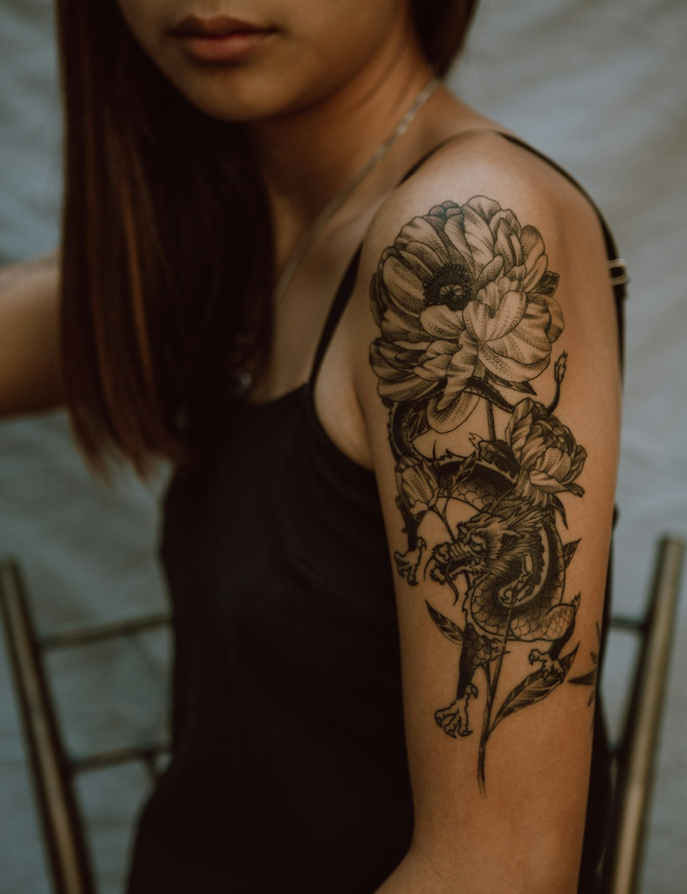
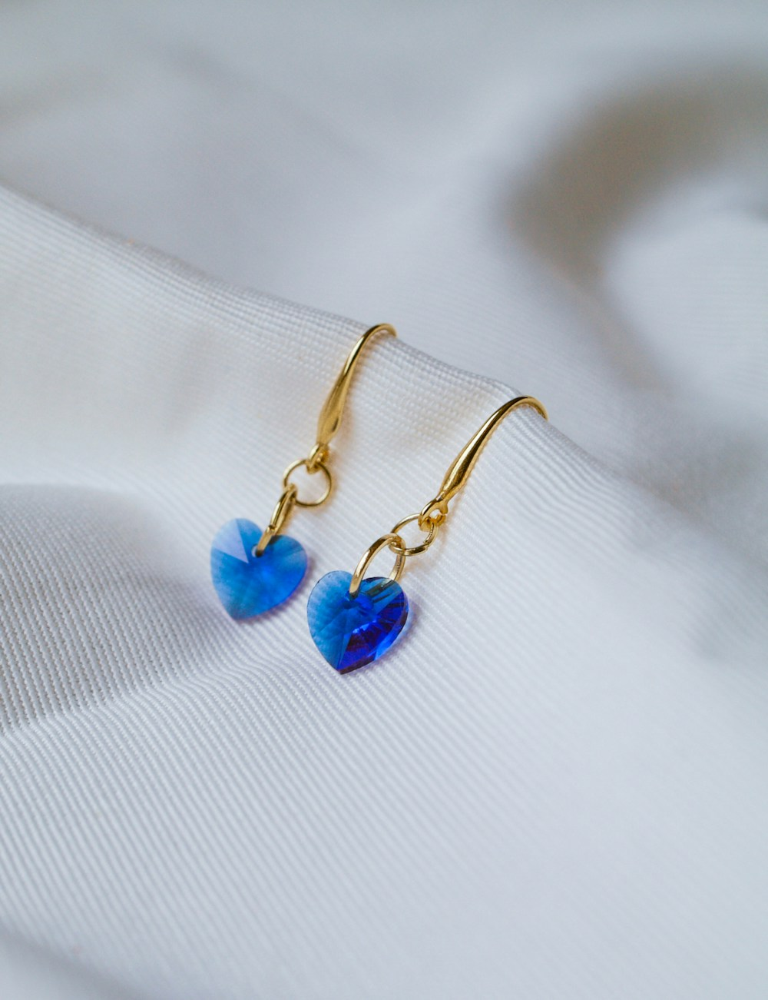
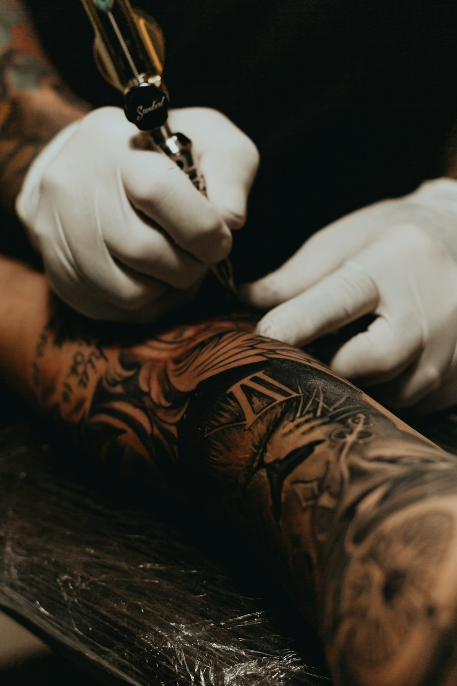
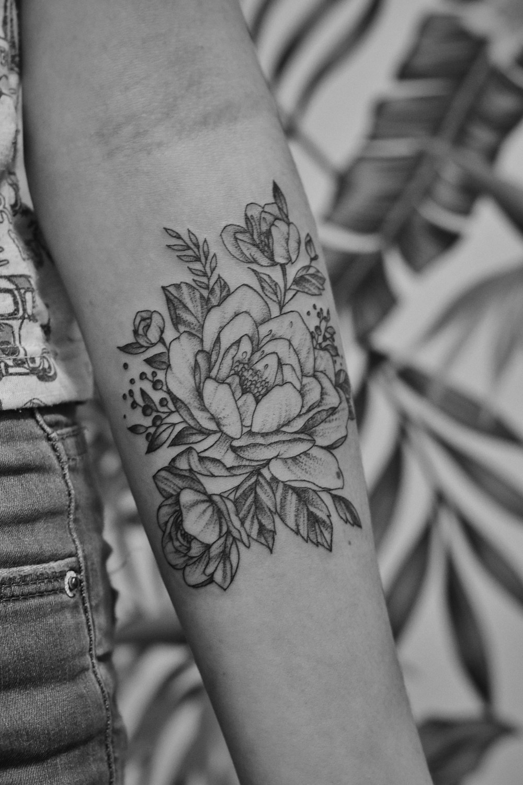

En SkinLab Coyoacán convertimos tus recuerdos e inspiración en piezas duraderas sobre la piel. Especialistas en línea fina, micro-realismo, blackwork y perforaciones corporales con joyería de titanio grado implante ASTM F-136. Un espacio limpio, luminoso y profesional en el corazón cultural del sur de la CDMX.
En reseñas de clientes locales y viajeros en el Centro de Coyoacán

Material Grado Clínico
Agujas abiertas frente a tus ojos
Cuidado
Cicatrización Asistida
Piercing
Joyería Hipoalergénica
+4,000
Piezas & Perforaciones Realizadas
4.8 ★
Calificación en Directorios y Google
100%
Agujas & Cartuchos Desechables
7 Días
Abierto Lun a Dom en Coyoacán
Nuestros artistas dominan diversas corrientes para plasmar exactamente la estética que imaginas.
Líneas ultra delgadas y elegantes. Especialistas en botánica, caligrafía sutil, micro-ilustraciones, constelaciones y trazos limpios que lucen delicados y cicatrizan nítidos.
Detalle fotográfico a escala pequeña: retratos de mascotas queridas, obras de arte clásicas, esculturas y escenas complejas con degradados de sombra suaves y texturas vivas.
Negros profundos, geometría sagrada, dotwork (puntillismo), patrones ornamentales y mandalas con alto impacto visual y durabilidad insuperable a través de los años.
Líneas variadas con gran volumen, paletas de color vibrantes, motivos de fauna mexicana, flora, mitología y rostros estilizados llenos de carácter y dinamismo.
¿Tienes un tatuaje viejo que ya no te gusta o un nombre del pasado? Diseñamos composiciones inteligentes para cubrirlo totalmente sin que parezca un parche oscuro.
¿Estás paseando por el Centro de Coyoacán y te nació la inspiración? Contamos con carpetas de diseños exclusivos listos para tatuarse y espacio para clientes sin cita previa.
Olvídate de las pistolas perforadoras que desgarran cartílago y transmiten bacterias. En SkinLab realizamos perforaciones exclusivamente con aguja americana estéril y joyería de grado médico que garantiza una cicatrización limpia, rápida y sin granulomas.
El mismo material usado en prótesis médicas. 100% biocompatible, hipoalergénico y libre de níquel.
No raspa los tejidos al colocarse ni acumula suciedad como las piezas genéricas de fantasía.
Asesoría de estilo para armonizar múltiples piercings (Hélix, Tragus, Conch, Daith, Rook) con tu anatomía.

Trazos que inspiran, cicatrizaciones sanas y la satisfacción de llevar una pieza de autor en tu piel.
Líneas con aguja 1RL que lucen ligeras y sofisticadas.

BlackworkPuntillismo de arrastre con negros intensos y duraderos.

Estudio EstérilMenor inflamación y trauma en la piel para una rápida curación.
Joyería de titanio con brillos resistentes al agua y sudor.
Ambiente relajante, buena música y explicaciones paso a paso.
Ubicación inmejorable para disfrutar tu tarde en el centro histórico.
Tu piel y tu salud son nuestra prioridad absoluta en cada procedimiento.
Cartuchos estériles con fecha de caducidad visible, abiertos frente a ti y desechados en contenedor RPBI inmediatamente.
Tinta 100% libre de metales pesados o crueldad animal, con registro sanitario internacional para evitar alergias.
Esterilización de áreas de trabajo con desinfectantes de nivel hospitalario entre cada cliente y campos plásticos desechables.
Protección con membrana transparente transpirable que bloquea agua y bacterias para que tu tatuaje cure solo sin costras.
Sin intermediarios ni presupuestos al azar. Selecciona si deseas tatuaje o piercing, el tamaño y extras, y recibe el costo estimado con botón directo a WhatsApp.
Total Estimado:
Incluye material estéril desechable y asesoría
Puedes adjuntar tu imagen o boceto de referencia al abrir el chat.
Nuestra pasión por el detalle, la paciencia y la higiene han convertido a SkinLab en un referente en Coyoacán.
"Fue mi primer tatuaje y tenía muchísimos nervios, pero la tatuadora me tuvo una paciencia infinita. Me explicó cada paso, abrió el material frente a mí y el trazo fino quedó mil veces más bonito de lo que imaginaba. ¡Súper recomendado!"
Valeria Alarcón
Trazo Fino Botánico • Primera pieza
"Me hice un piercing Helix y un Nostril. En otros lados me habían puesto piezas chafas que se me infectaban; aquí la joyería de titanio grado implante no me dio ninguna molestia. Cero dolor y cicatrizaron perfecto."
Sofía Villarreal
Body Piercing • Titanio ASTM F-136
"Llegamos de imprevisto caminando por el centro de Coyoacán y nos atendieron excelente para un flash tattoo. El lugar está súper limpio, iluminado, con un ambiente muy relajado. Ya estoy planeando mi siguiente pieza con ellos."
Diego Morales
Flash Tattoo • Walk-in en Coyoacán
Estamos ubicados sobre Calle Felipe Carrillo Puerto #46, a solo dos cuadras del Jardín Centenario y la Fuente de los Coyotes. Una zona segura, caminable y llena de cafeterías y arte.
Dirección
Felipe Carrillo Puerto #46, Planta Baja, Centro de Coyoacán, C.P. 04000, CDMX
WhatsApp & Citas
+52 55 3578 2875
Horario de Estudio
Lunes a Domingo: 12:00 a 20:30 hrs
Mándanos tu boceto o foto de referencia por WhatsApp y recibe asesoría directa de nuestros artistas residentes.